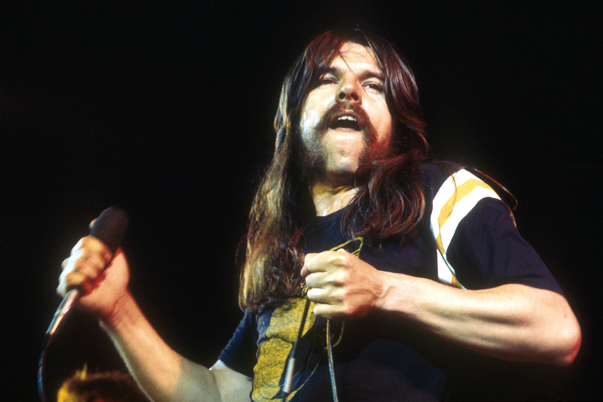

Bob Seger
The great midwestern singer-songwriter

Bob Seger singing in concert
"Out there in the spotlight, your a million miles away"
Bob Seger Is a musician who touched the hearts of many,
(including myself) over his 60+ year career as a singer-songwriter.
First national hit song
Ramblin' Gamblin' Man at #17
First top-ten album
Night Moves
#1 Billboard album
Against the Wind
You can learn more about Bob Seger on his wikipedia page.